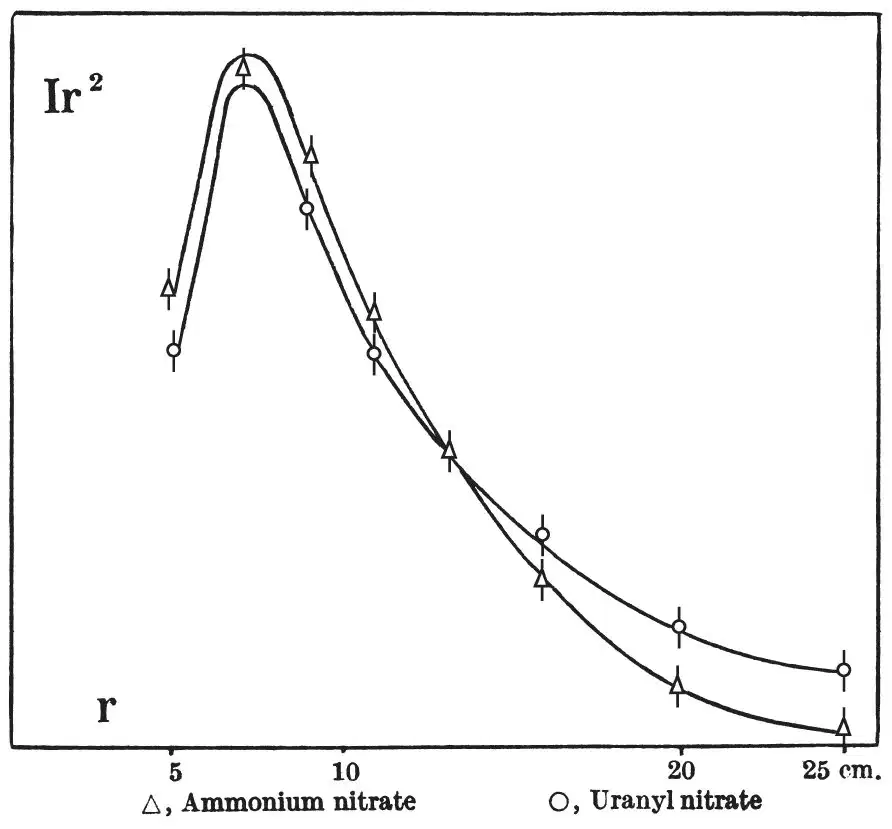

中文
中文H. von Halban, jun. et al.
Editor’s Note
Recent experiments had shown that considerable energy was released in the explosion of uranium or thorium nuclei, triggered by impacting neutrons. The possibility of an energy-releasing chain reaction depended on whether such processes might release further neutrons. Here Hans von Halban, Frédéric Joliot and Lew Kowarski report experiments suggesting a positive answer. They sent neutrons into two substances, ammonium nitrate and uranyl nitrate, and measured the number of detected slow neutrons as a function of distance. A discrepancy between the two substances clearly seemed attributable to the presence of uranium and to additional neutrons being created in fission events. They could say little about the energy of the neutrons, but these observations were a step towards sustained nuclear fission. 中文
RECENT experiments1,2 have revealed the existence of a new kind of nuclear reaction: neutron bombardment of uranium and thorium leads to an explosion of the nucleus, which splits up into particles of inferior charge and weight, a considerable amount of energy being liberated in this process. Assuming a partition into two particles only, so that the nuclear mass and charge of uranium have to be distributed between two lighter nuclei, the latter contain considerably more neutrons than the heaviest stable isotopes with the same nuclear charges. (A splitting into, for example, 98Rb and 141Cs means an excess of 11 neutrons in the first, and of 8 neutrons in the second of these two nuclei.) There seem to be two possibilities of getting rid of this neutron excess. By the emission of a β-ray, a neutron is transformed into a proton, thus reducing the neutron excess by two units; in the example given above, five and four successive β-activities respectively would be needed to restore the neutron-proton stability ratio. In fact, the explosion products have been observed to be β-active and several periods have been recorded, so that a part, at least, of the neutron excess is certainly disposed of in this way. Another possible process is the direct liberation of neutrons, taking place either as a part of the explosion itself, or as an “evaporation” from the resulting nuclei which would be formed in an excited state. 中文
In order to find some evidence of this second phenomenon, we studied the density distribution of the thermal neutrons produced by the slowing down of photo-neutrons from a Ra γ-Be source in a 1.6 molar solution of uranyl nitrate and in a 1.6 molar solution of ammonium nitrate (the hydrogen contents of these two solutions differ by only 2 percent). Plotting Ir2 as a function of r (where r is the distance between the source and a given point, and I is the local density of thermal neutrons at the same point, measured by the activity induced in a dysprosium detector), a curve is obtained the area of which is proportional to Q·τ, Q being the number of neutrons per second emitted by the source or formed in the solution and τ the mean time a neutron spends in the solution before being captured3,4. Any additional nuclei, which do not produce neutrons, brought into the solution, will increase the chances of capture and therefore decrease τ and the area. If, however, these dissolved nuclei are neutron-producing, Q will be greater and the area of the curve will tend to increase. Evidence of neutron production, as indicated by an actual increase of the area, will only be obtained if the gain through Q (neutron production) is greater than the loss through τ (neutron capture). This loss can anyway be studied separately, since it has been shown5 that the introduction of nuclei which act merely by capture or by increasing the hydrogen content of the solution can affect the shape of the density curve only in a characteristic way: the modified curve can always be brought to coincide with the primitive curve by multiplying all abscissae by a suitable factor and all ordinates by another factor. 中文
The accompanying graph shows the two curves obtained. At small distances from the source the neutron density is greater in the ammonium solution than in the uranyl solution; at distances greater than 13 cm., the reverse is true. In other words, the decrease of the neutron density with the distance is appreciably slower in the uranyl solution. 中文

The observed difference must be ascribed to the presence of uranium. Since the two curves cannot be brought to coincide by the transformation mentioned above, the uranium nuclei do not act by capture only; an elastic diffusion by uranium nuclei would have an opposite effect: it would “contract” the abscissae, instead of stretching them. The density excess, shown by the uranyl curve beyond 13 cm., must therefore be considered as a proof of neutron production due to an interaction between the primary neutrons and the uranium nuclei. A reaction of the well-known (n, 2n) type is excluded because our primary neutrons are too slow for such a reaction (90 percent of Ra+Be photo-neutrons have energies smaller than 0.5 Mev. and the remaining 10 percent are slower than 1 Mev.). 中文
The degree of precision of the experiment does not permit us to attribute any significance to the small increase of the area in the uranyl curve (as compared to the ammonium curve), which we obtain by extrapolating the curves towards greater distances. In any event, an inferior limit for the cross-section for the production of a neutron can be obtained by assuming that the density excess due to this production is equal throughout the whole curve to the excess observed at r = 25 cm.; this limit, certainly inferior to the actual value, is 6×10－25 cm.2. 中文
Our measurements yield no information on the energy of the neutrons produced. If, among these neutrons, some possess and energy superior to 2 Mev., one might hope to detect them by a (n,p) process, for example, by the 32S(n,p)32P reaction. An experiment of this kind, Ra γ-Be still being used as the primary neutron source, is under way. 中文
The interest of the phenomenon observed as a step towards the production of exo-energetic transmutation chains is evident. However, in order to establish such a chain, more than one neutron must be produced for each neutron absorbed. This seems to be the case, since the cross-section for the liberation of a neutron seems to be greater than the cross-section for the production of an explosion. Experiments with solutions of varying concentration will give information on this question. 中文
(143, 470-471; 1939)
H. von Halban, jun., F. Joliot and L. Kowarski: Laboratoire de Chimie Nucléaire, Collège de France, Pairs, March 8.
References:
1. Joliot, F., C.R., 208, 341 (1939).
2. Frisch, O. R., Nature, 143, 276 (1939).
3. Amaldi, E., and Fermi, E., Phys. Rev. 50, 899 (1936).
4. Amaldi, E., Hafstad, L., and Tuve, M., Phys. Rev., 51, 896 (1937).
5. Frisch, O. R., von Halban, jun., H., and Koch, J., Danske Videnskab. Kab., 15, 10 (1938).